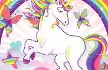

UNICORNS

The unicorn is a legendary creature that has been described since antiquity as a beast with a single large, pointed,
spiraling horn projecting from its forehead.
In European literature and art, the unicorn has for the last thousand years or so been depicted as a white horse- or
goat-like animal with a long straight horn with spiralling grooves, cloven hooves, and sometimes a goat's beard. In the
Middle Ages and Renaissance, it was commonly described as an extremely wild woodland creature, a symbol of purity and
grace, which could be captured only by a virgin. In encyclopedias, its horn was described as having the power to render
poisoned water potable and to heal sickness. In medieval and Renaissance times, the tusk of the narwhal was sometimes
sold as a unicorn horn.
A bovine type of unicorn is thought by some scholars to have been depicted in seals of the Bronze Age Indus Valley
civilization, the interpretation remaining controversial. An equine form of the unicorn was mentioned by the ancient
Greeks in accounts of natural history by various writers, including Ctesias, Strabo, Pliny the Younger, Aelian,[2] and
Cosmas Indicopleustes.[3] The Bible also describes an animal, the re'em, which some translations render as unicorn.[2]
The unicorn continues to hold a place in popular culture. It is often used as a symbol of fantasy or rarity.[4] In the
21st century, it has become an LGBTQ symbol.
History
Indus stamp seal and modern impression; unicorn and incense burner or manger, 2600–1900 BC
Indus Valley civilization
A creature with a single horn, conventionally called a unicorn, is the most common image on the soapstone stamp seals of
the Bronze Age Indus Valley civilization ("IVC"), from the centuries around 2000 BC. It has a body more like a cow than
a horse, and a curved horn that goes forward, then up at the tip.[citation needed] The mysterious feature depicted
coming down from the front of the back is usually shown; it may represent a harness or other covering. Typically, the
unicorn faces a vertical object with at least two stages; this is variously described as a "ritual offering stand", an
incense burner, or a manger. The animal is always in profile on Indus seals, but the theory that it represents animals
with two horns, one hiding the other, is disproved by a (much smaller) number of small terracotta unicorns, probably
toys, and the profile depictions of bulls, where both horns are clearly shown. It is thought that the unicorn was the
symbol of a powerful "clan or merchant community", but may also have had some religious significance.
In South Asia, the unicorn is only seen during the IVC period, and disappeared in South Asian art after this. Jonathan
Mark Kenoyer stated the IVC "unicorn" has no "direct connection" with later unicorn motifs observed in other parts of
the world; nonetheless, it remains possible that the IVC unicorn had contributed to later myths of fantastical
one-horned creatures in West Asia.[5]
Classical antiquity
Unicorns are not found in Greek mythology, but rather in the accounts of natural history, for Greek writers of natural
history were convinced of the reality of unicorns, which they believed lived in India, a distant and fabulous realm for
them. The earliest description is from Ctesias, who in his book Indika ("On India") described them as wild asses, fleet
of foot, having a horn a cubit and a half (700 mm, 28 inches) in length, and colored white, red and black.[6] Unicorn
meat was said to be too bitter to eat.[7]
Winged bull, perhaps perceived as a unicorn, in Apadana, Susa, Iran
Ctesias got his information while living in Persia. Unicorns or, more likely, winged bulls, appear in reliefs at the
ancient Persian capital of Persepolis in Iran.[8] Aristotle must be following Ctesias when he mentions two one-horned
animals, the oryx (a kind of antelope) and the so-called "Indian ass" (ἰνδικὸς ὄνος).[9][10] Antigonus of Carystus also
wrote about the one-horned "Indian ass".[11] Strabo says that in the Caucasus there were one-horned horses with
stag-like heads.[12] Pliny the Elder mentions the oryx and an Indian ox (perhaps a greater one-horned rhinoceros) as
one-horned beasts, as well as "a very fierce animal called the monoceros which has the head of the stag, the feet of the
elephant, and the tail of the boar, while the rest of the body is like that of the horse; it makes a deep lowing noise,
and has a single black horn, which projects from the middle of its forehead, two cubits [900 mm, 35 inches] in
length."[13] In On the Nature of Animals (Περὶ Ζῴων Ἰδιότητος, De natura animalium), Aelian, quoting Ctesias, adds that
India produces also a one-horned horse (iii. 41; iv. 52),[14][15] and says (xvi. 20)[16] that the monoceros (μονόκερως)
was sometimes called cartazonos (καρτάζωνος), which may be a form of the Arabic karkadann, meaning 'rhinoceros'.
Cosmas Indicopleustes, a 6th-century Greek traveler who journeyed to India and the Kingdom of Aksum, gives a description
of a unicorn based on four bronze figures he saw in the four-towered palace of the King of Ethiopia. He states, from
report, that "They speak of him as a terrible beast and quite invincible and that all its strength lies in its horn.
When he finds himself pursued by many hunters and on the point of being caught, he springs up to the top of some
precipice whence he throws himself down and in the descent turns a somersault so that the horn sustains all the shock of
the fall, and he escapes unhurt."[17][18]